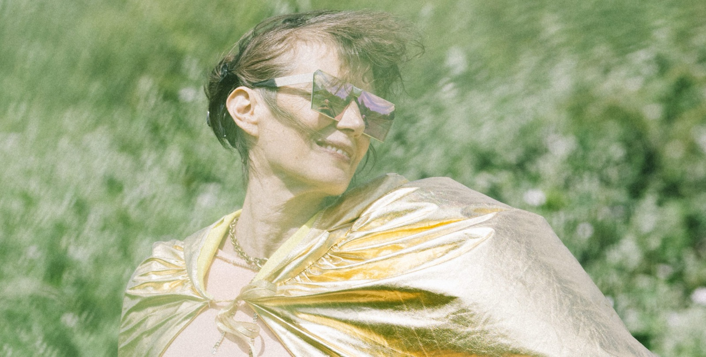

“Beautiful stuff” – Zakia Sewell BBC 6 Music
“One of this year’s best surprises has been Soul Retrieval, the debut solo album from Janine Rainforth, best known as the lead singer and co-founder of seminal post-punk funk outfit Maximum Joy….”
Cosmo Godfree (Ransom Note)
“As Rainforth forges a new musical future, it’s important not to divorce it from her fearless and catalytic past.. Releasing these long-gestated ideas into the public sphere, and especially returning to the stage after over two decades, took some guts..” Geraint Davies – Crack Magazine
Gilles Peterson featured Always With You – from Janine’s new album on his All Queens BBC 6Music show
Original co-founder and front woman of post punk band Maximum Joy, Janine Rainforth returned to performing her music in public in 2014, after her music career was cut short following assault and trauma.
One of her first return live performances was supporting the Pop Group at Islington Assembly Rooms. Since then Janine spearheaded the reforming of her band Maximum Joy with some original players and some new to perform at Simple Things, 2015 and went on to make a new Maximum Joy album P.E.A.C.E. in 2019, released on her own label London Field Recordings in 2019. They played Dimensions 2018 and the inaugural We Out Here 2019.
Watch a few live clips (of varying quality) below
Now to commemorate her new solo album and rich back catalogue Janine and her band are taking bookings for live dates. Contact: mail@londonfieldrecordings.com
“Marrying digital technologies with found sounds and otherworldly vocals, she’s dabbling in ambient crescendos and synth-laden melodies to maximum effect.” Janine spoke to M Magazine
Some tunes from Janine’s discography
“Rainforth’s new work comprises rich, blurry lullabies which flow sonorously through space, dripping searching keys over shuffling rhythms and, of course, Rainforth’s piercing but pining vocal. It’s a sweeping, ambient sound which recalls another strand of 80s alternative in the otherworldly ethereal wave of Liz Fraser’s work with This Mortal Coil, or even the contemporary avant-pop of Zola Jesus or Glasser.” Geraint Davies – Crack Magazine
Janine’s writing on Substack:
this is the beginning … by janine rainforth
becoming a not so silent girl
“(P.E.A.C.E.) feels like a celebration of togetherness ..sliding, airy vocals, lending a spooky quality to the tracks, like a ghost slipping in and out between worlds” Crack Magazine 7/10


Janine Rainforth by Geraldine Ewer – used as the cover of her first single with Maximum Joy.
Get in touch here: mail@londonfieldrecordings.com